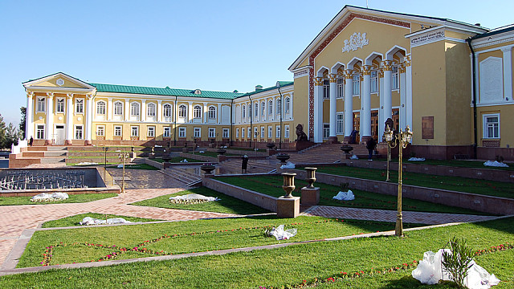
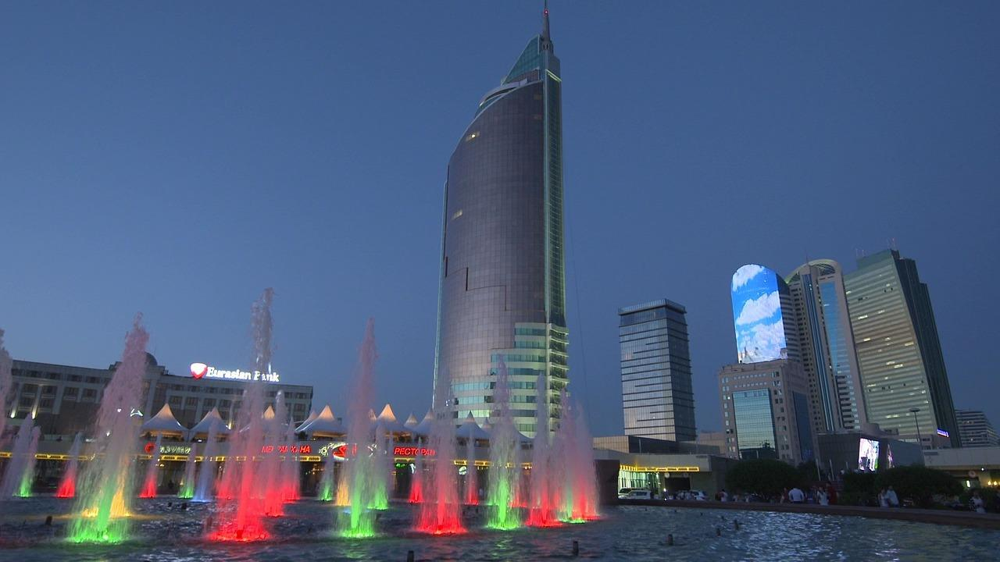
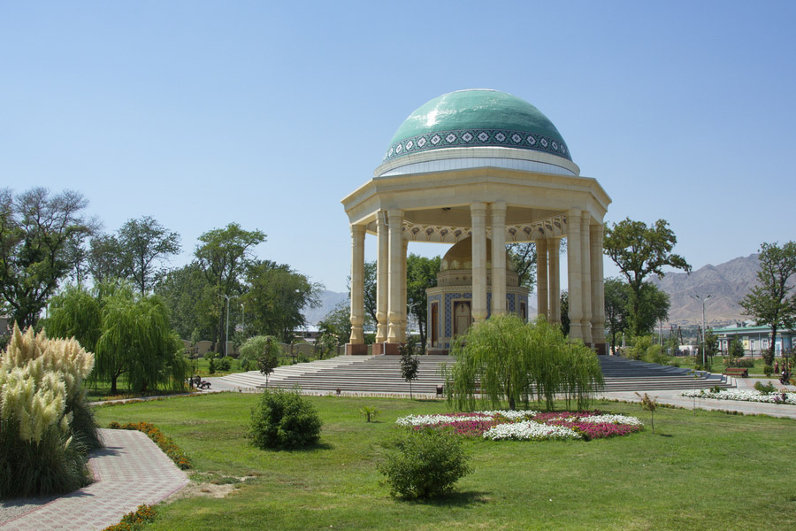

Khujand, sometimes spelled Khodjent and known as Leninabad in 1936–1991, is the second-largest city of Tajikistan and the capital of the northernmost province of Tajikistan, now called Sughd. Khujand is one of the oldest cities in Central Asia, dating back about 2,500 years. It is situated on the Syr Darya at the mouth of the Fergana Valley and was a major city along the ancient Silk Road, mainly inhabited by ethnic Tajiks. It is proximate to both the Uzbekistan and Kyrgyzstan borders.The city became a major staging point on the northern Silk Road. It also became a cultural hub and several famous poets and scientists came from this city.
  